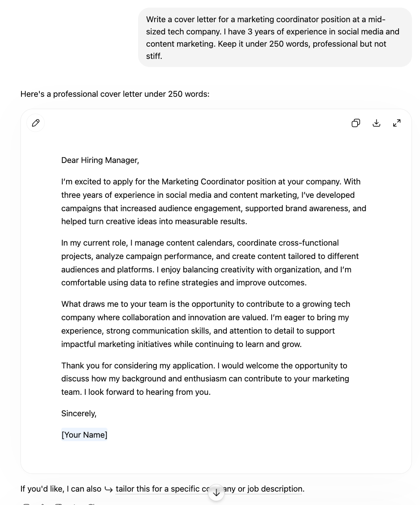
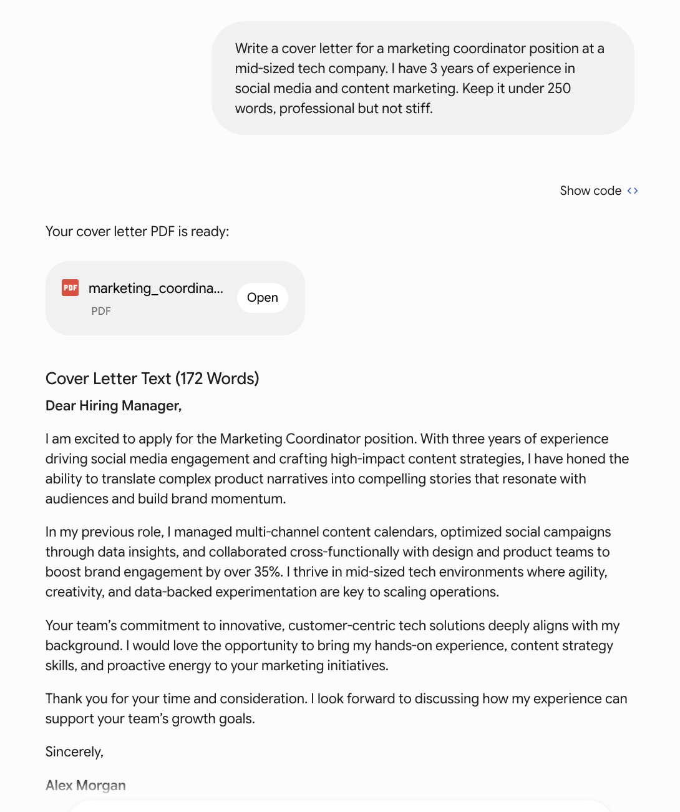
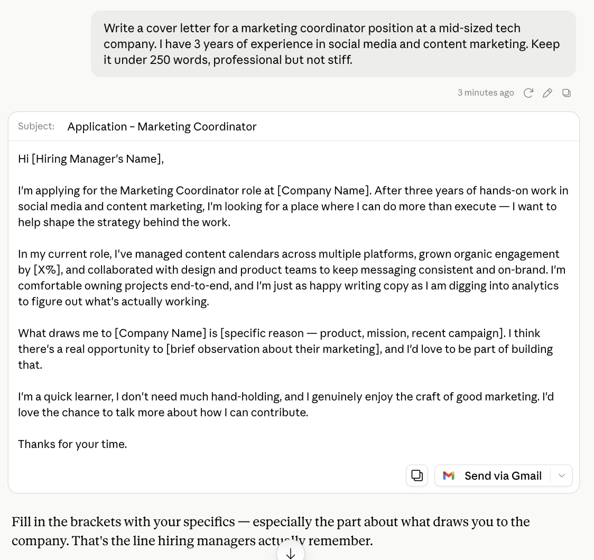

Same job, same prompt, three very different letters. One played it safe, one made a PDF, and one actually sounded human.
A cover letter is one of the most common things people ask AI to write — and one of the easiest to get wrong. Get it too generic and it reads like a template. Too eager and it reads like a robot. So I gave the identical prompt to ChatGPT, Claude, and Gemini and compared what came back.
The instruction was deliberately specific about tone: professional, but not stiff. That last part is where the three models separated.
ChatGPT produced exactly what you would expect a good cover letter to look like — and that is both its strength and its weakness.

It opened with "I'm excited to apply for the Marketing Coordinator position," hit all the expected beats — experience, current responsibilities, why the company — and closed politely. It is clean, correctly structured, and sendable as-is.
The problem is that it reads like every other cover letter. "I'm excited to apply," "I enjoy balancing creativity with organization," "continuing to learn and grow" are phrases a hiring manager has read a thousand times. Nothing here is wrong. Nothing here is memorable either. If you want a safe baseline, this is it.
Gemini did something the others did not: it generated a downloadable PDF of the letter, then showed the text with a word count (172 words — comfortably the tightest of the three).

The writing leaned on concrete numbers — "boosted brand engagement by over 35%" — which is exactly the kind of specific, quantified claim that makes a marketing application stand out. It also name-checked the mid-sized tech context directly: "I thrive in mid-sized tech environments where agility, creativity, and data-backed experimentation are key."
The trade-off is that the invented 35% figure is a placeholder you would have to make true. But as a structure, Gemini's was the most results-oriented, and the PDF export is a genuinely useful touch if you are moving fast.
The prompt asked for "professional but not stiff," and Claude took that instruction the most seriously.

Its letter sounded like an actual person wrote it. Lines like "I'm looking for a place where I can do more than execute — I want to help shape the strategy behind the work" and "I'm a quick learner, I don't need much hand-holding, and I genuinely enjoy the craft of good marketing" have a voice. They are confident without being arrogant, and they read as human rather than assembled from cover-letter parts.
Claude also did something the others did not: after the letter, it flagged which blank mattered most. It pointed to the "what draws me to this company" line and noted that is the part hiring managers actually remember — a small piece of strategic advice on top of the deliverable.
The risk with Claude's version is that its casual confidence ("I don't need much hand-holding") could read as too informal for a conservative employer. For a mid-sized tech company, it probably lands well. For a bank, you might dial it back.
All three produced a usable letter. The right choice depends on the job and how much editing you want to do.
Use ChatGPT if you want a safe, conventional letter that will not raise any eyebrows — good for formal industries or when you plan to heavily customize it yourself anyway.
Use Gemini if you want something short, results-focused, and ready to send as a file. Its numbers-forward structure suits marketing and sales roles especially well.
Use Claude if you want the letter to sound like you and not like AI. For roles where personality and communication skills matter — which includes most marketing jobs — its more human voice is an advantage, as long as the company is not buttoned-up enough for the casual tone to backfire.
One practical tip that applies to all three: whichever you use, the generic middle paragraph is the throwaway. The line that gets you an interview is the specific reason you want that company — and no AI can write that for you, because it does not know. Claude was the only one that pointed this out.
For a cover letter, ChatGPT is the safe generalist, Gemini is the fast and quantified option that even exports a PDF, and Claude writes the most human, least stiff letter of the three. For most marketing roles, Claude's voice is the edge — but every one of these letters still needs the one thing AI cannot supply: a specific, genuine reason you want the job.